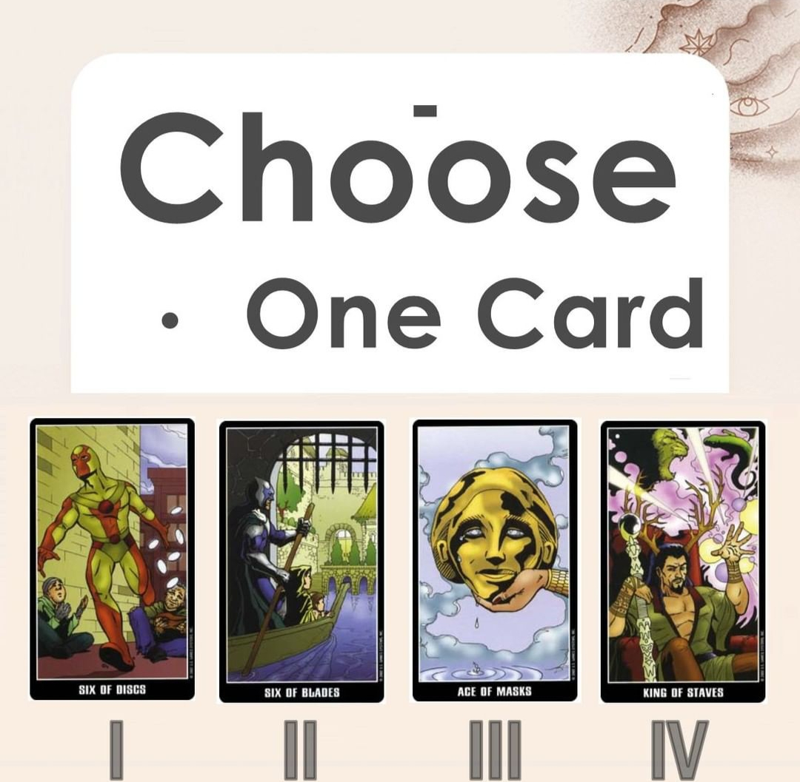

Music from: Deep Sleep Music and Nature Sounds - Zen Garden HD Relaxing. (2016, June 1). YouTube. https://www.youtube.com/watch?v=QKSFDPEGUZo
Image from:tarotaus(2022,April 7). Instagram.Retrieved April 13,2022,from https://www.instagram.com/tarotaus/
Image from: The Big Reveal | Book People. (2018, August 17). Book People Richmond. https://www.bookpeoplerichmond.com/event/big-reveal
Image from:Soriano, J. (2020, May 13). I Am Single, But I Am Happy and I Am Not Alone. I Take off the MASK! http://itakeoffthemask.com/journal/i-am-single-but-i-am-happy-and-i-am-not-alone/
If you have chosen this card, no one around you has a crush on you yet!
This card usually means interaction and sharing so most of the time you are still in a friend zone with that person. If there is anyone that you are close with recently, or have had a lot more interaction with someone recently. Y'all are most likely just friends, with no feelings that are more than friends.
However, do not be discouraged. If you are looking for a relationship, it is suggested to continue making friends. Although there are no friends who have a crush on you, as long as you continue making new friends, there is a possibility of a relationship.
So do ask your friends to introduce you to their friends or join your friends' party to make new people!
Image from: Feng, M. (2018, November 13). Best Dating Apps in Singapore: Which Is The Cheapest of Them All? Seedly. https://blog.seedly.sg/best-singapore-dating-app-comparison-cheapest-tinder-bumble-coffee-meets-bagel-paktor/
If you have chosen this card, people around you are mostly friends or connections!
This card usually means friendship or social network, hardly any chance to develop into a romantic relationship. It is suggested for you to try out online dating or try downloading dating apps!
No one have a crush on you at the moment. There is a chance for you to meet potential partners online. If you are looking for a relationship, it is adviced that you take the initiative meet new people. There is a high chance that your next partner would be from online dating.
Image from:Cain, S. (n.d.). Shy, Introverted, Both, or Neither (and Why Does It Matter)? Quiet Revolution. Retrieved April 13, 2022, from https://quietrev.com/are-you-shy-introverted-both-or-neither-and-why-does-it-matter/
If you have chosen this card, someone have a crush on you and wish to be in a romantic relationship with you.
That is because this group of cards represent affactuation and good favourable impression. If you want to find out who that person is, there is a clue here. This crush is rather shy and introverted, hence not quite active in your social circle!
If you observe, this person might not be around you all the time, but whenever you need help, the crush will appear, but when you no longer need help, the crush might dissapear again. Look carefully!
Image from:Wong, A. (n.d.). Online Dating Coaching To Turn Texts into Dates. Alex Wong Copywriting. Retrieved April 13, 2022, from https://alexwongcopywriting.com/dating-app-text-messaging/
If you have chosen this card, someone might have a crush on you and hopes to be in a romantic relationship with you!
That is because this set of cards usually represents goal and action! So at the moment, someone might have a crush on you. One clue here is to notice the one that is always asking you out and always chatting with you. It might seem like y'all have nothing much to talk but the crush just wanna have conversations with you. Look out for them, they are the ones that have a crush on you!
If you are looking for a relationship, try to recall to see if there is any "suspicious person" as described!
Just for fun!